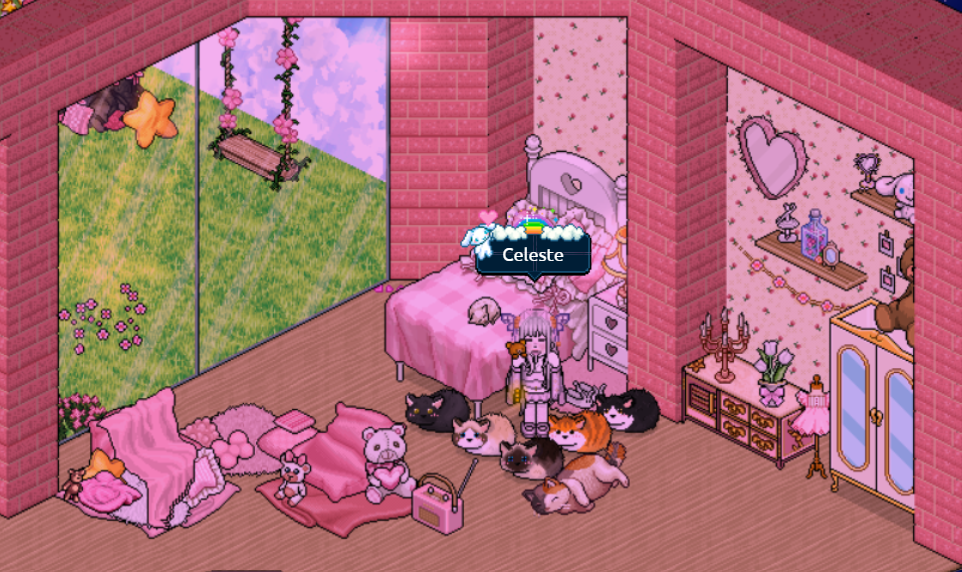

Sobre mí
Mi interés por Desarrollo Web surgió como una forma de complementar la Licenciatura en Nutrición, ya que puede brindarme herramientas muy útiles para comunicar información, crear recursos educativos y desarrollar nuevos proyectos.

Tecnologías de interés
- Python
- HTML
- CSS